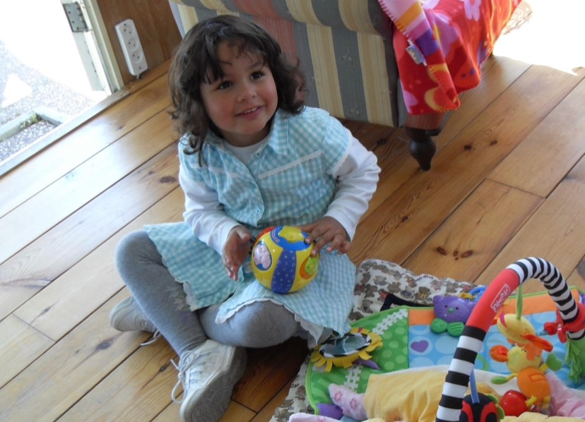

About Me
Fast learning, easily focused and both good at working independently and in groups.
My favourite way to spend my free time is being with my horses and my dog. I can watch most movies or shows, the same goes for music, as long as it's entertaining somehow. I also like reading, mostly about people and their stories or thoughts, I like trying to understand the complexity of the human mind and what makes people.
I can easily learn new things, work focused and independently. I am good at seeing things from multiple perspectives and I am open minded to new ideas or input. I got my propaedeutic certificate for Social Work because I studied it for a year, I enjoyed it too but I think a job in the IT field is more suitable for me long term.
Why I picked to study ICT in Middelburg
- My brother and my dad both both work(ed) in the field
- The building is close to home
- It interests me and motivates me to keep developing myself
